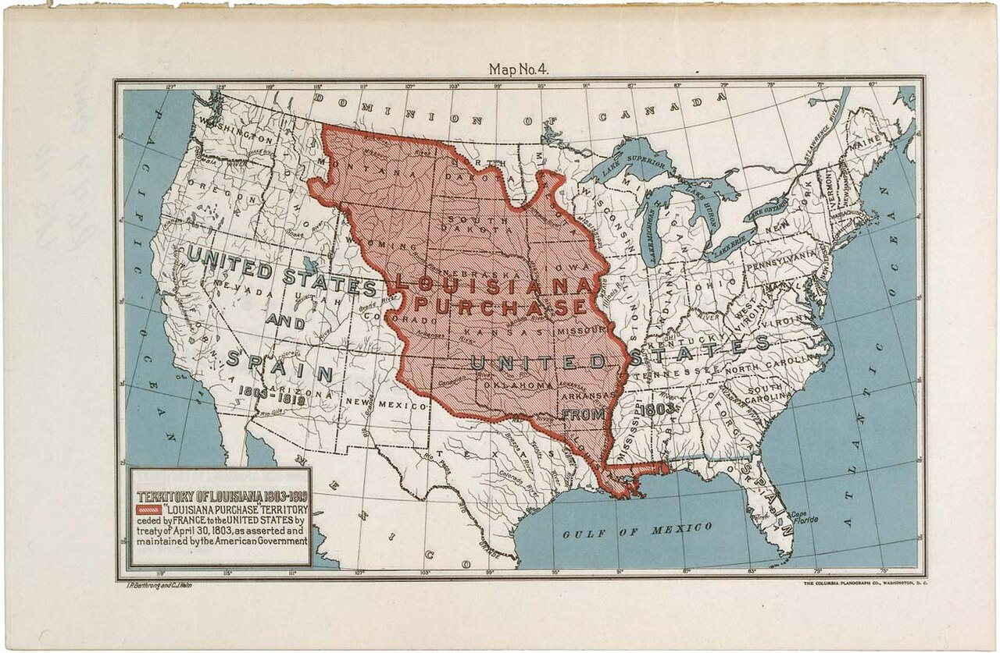
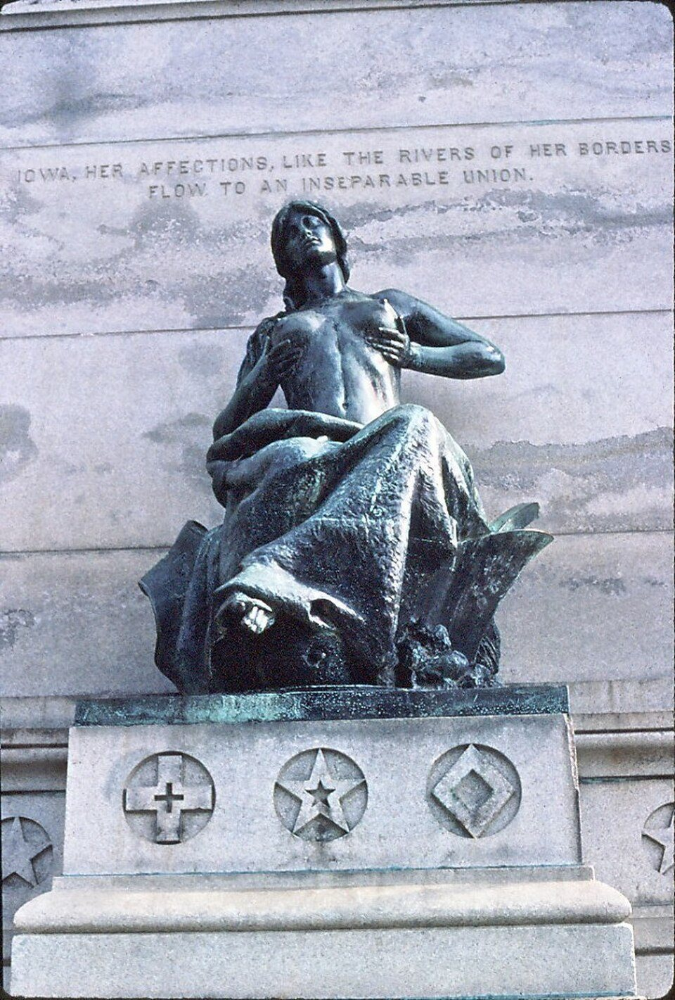
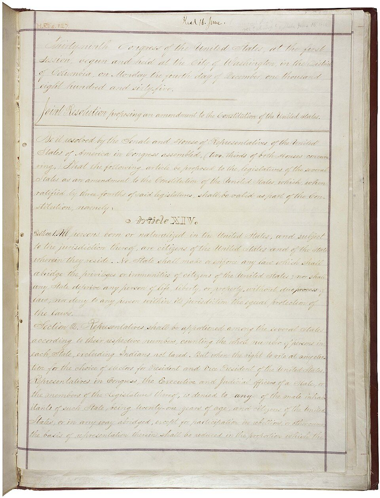
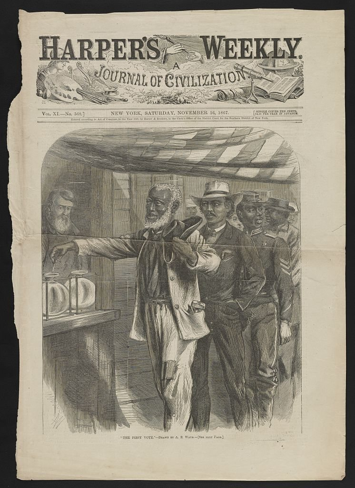
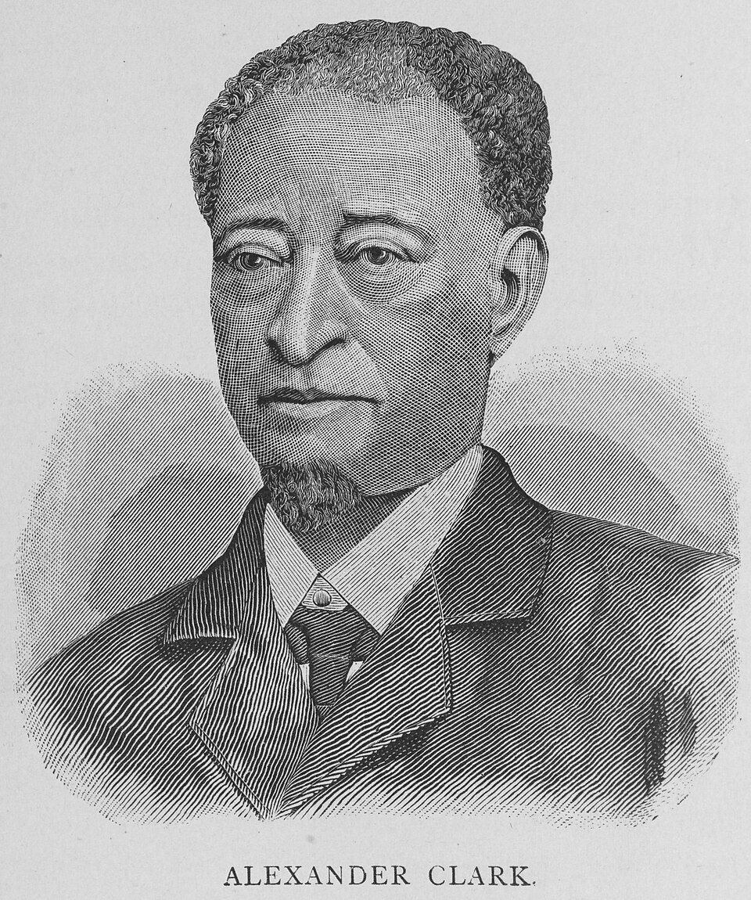
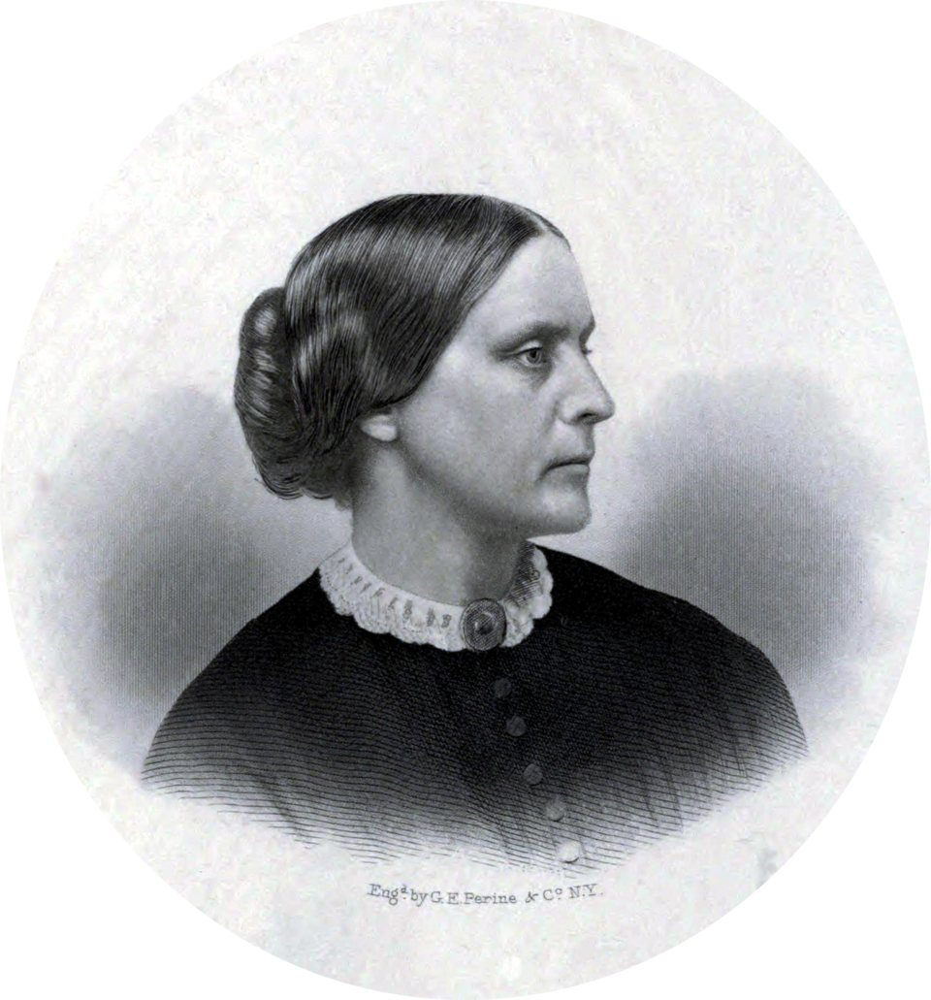
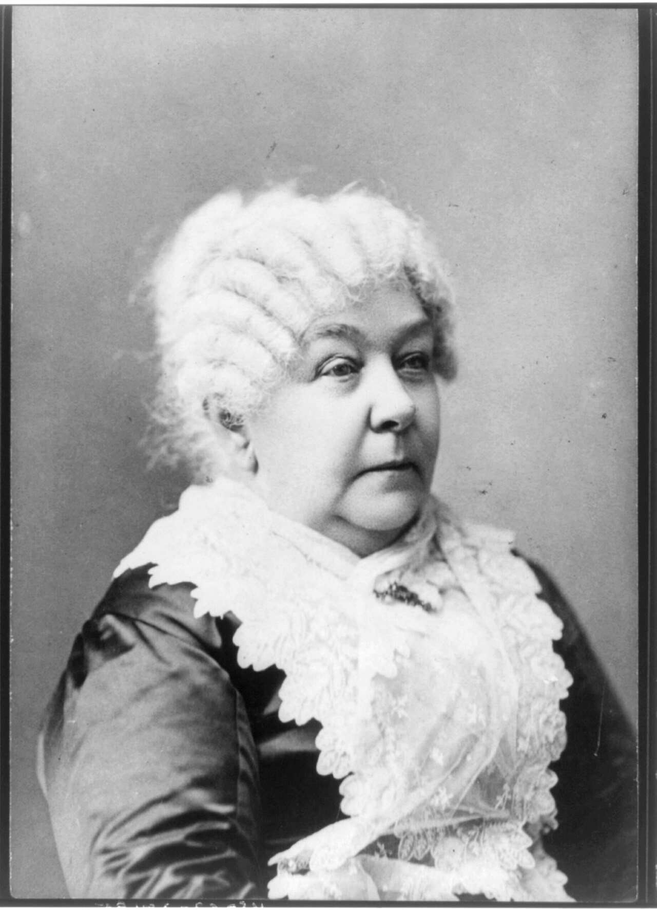
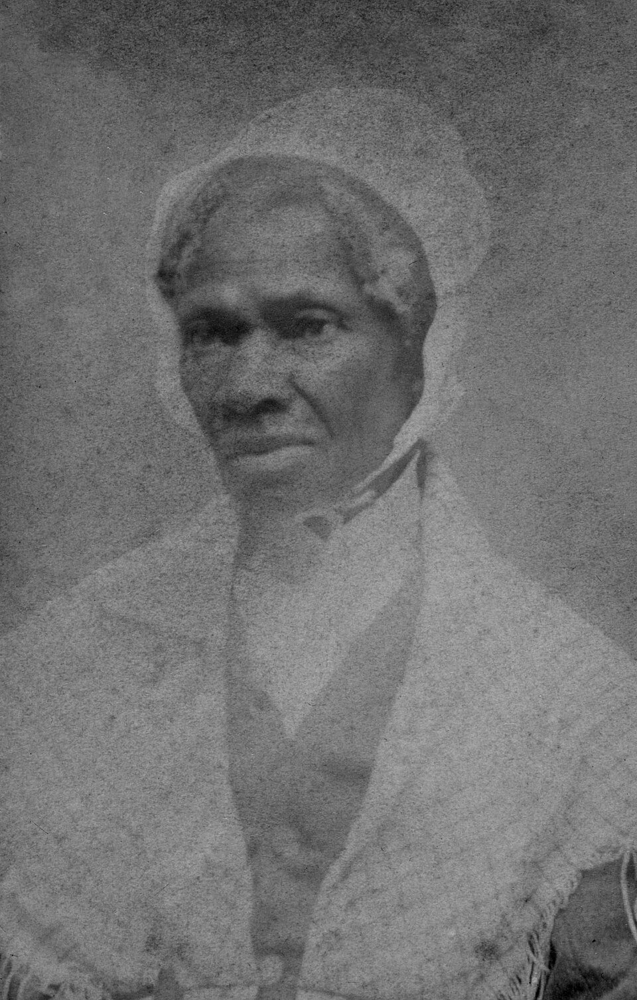
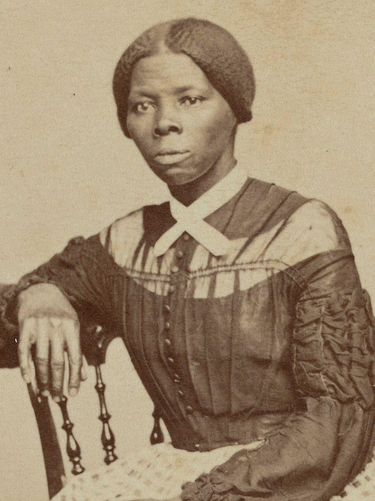

Test questions 90–99 Louisiana, Lincoln, and who gets rights
The 1800s in three numbers
Three real numbers from today's story. Two of them are about Iowa.
1803
the U.S. pays France $15 million for Louisiana. Iowa was part of it.
76,000
Iowa soldiers who fought for the Union in the Civil War
1868
the year Iowa voters let Black men vote, 2 years before the whole country did
The 1800s · Iowa Civics Test, Friday 5
Today: 10 questions, 5 big ideas
1
The country grows
Q90 · Q91
2
The Civil War
Q92 · Q93 · Q96
3
Lincoln and freedom
Q94★ · Q95
4
Who counts as a citizen?
Q97 · Q98
5
Women fight for their rights
Q99
★ = one of the most important questions on the official list · Standards: Gov.14 · Gov.15 · Gov.3
BIG IDEA 1 · THE COUNTRY GROWS
The biggest land deal ever

TEST QUESTION 90
What territory did the United States buy from France in 1803?
Louisiana Territory
Louisiana
Territory = land a country owns that isn't a state yet.
IOWA CONNECTION
The land where Iowa is now was part of this deal. It nearly doubled the size of the country. Native nations, like the Ioway, already lived here.
The 1800s · Iowa Civics Test, Friday 5
Q91: Name one war from the 1800s
1812–1815
War of 1812
vs. Britain. British troops burned the White House.
1846–1848
Mexican-American War
vs. Mexico. The U.S. gained California and the Southwest.
1861–1865
Civil War
North vs. South. The deadliest war in U.S. history.
1898
Spanish-American War
vs. Spain. Fought in Cuba and the Philippines.
EASIEST ANSWER
Civil War. It also answers Q92 and Q96. One answer, three questions!
The 1800s · Iowa Civics Test, Friday 5
BIG IDEA 2 · THE CIVIL WAR
Why the country split
TEST QUESTION 92
Name the U.S. war between the North and the South.
The Civil War
North = the Union (the United States). South = the Confederacy.
WHY IT HAPPENED
The main cause was slavery. After Lincoln won the 1860 election, 11 Southern states seceded (left the country) to protect slavery. In April 1861 they fired on Fort Sumter.
The 1800s · Iowa Civics Test, Friday 5
BIG IDEA 2 · THE CIVIL WAR
Q93: Name one Civil War event
Any ONE of these 8 counts. Easiest to remember: Gettysburg.
1861 · Fort Sumter
The first shots of the war
1862 · Antietam (Sharpsburg)
The bloodiest single day in U.S. history
1863 · Emancipation Proclamation
Lincoln's order to free enslaved people
1863 · Gettysburg
The biggest battle. The Union wins.
1863 · Vicksburg
The Union takes the Mississippi River
1864 · Sherman's March
A Union army marches through Georgia
1865 · Appomattox
Confederate General Lee surrenders
1865 · Lincoln is assassinated
Shot 5 days after Lee's surrender
Trap: Pearl Harbor and the Boston Tea Party are NOT Civil War events.
The 1800s · Iowa Civics Test, Friday 5
IOWA CONNECTION
Iowa in the Civil War
Iowa fought for the Union (the North).
About 76,000 Iowans served. About 13,000 died, more from disease than from battle.
Black Iowans served too. Alexander Clark of Muscatine helped recruit Iowa's Black regiment.
Some Iowans helped people escape slavery on the Underground Railroad, in towns like Tabor and Grinnell.

The 1800s · Iowa Civics Test, Friday 5
BIG IDEA 3 · LINCOLN AND FREEDOM
Abraham Lincoln
TEST QUESTION 94 ★
Abraham Lincoln is famous for many things. Name one.
Freed the slaves (Emancipation Proclamation)
Saved (or preserved) the Union
Led the United States during the Civil War
16th president of the United States
Delivered the Gettysburg Address
THE GETTYSBURG ADDRESS (1863)
A 2-minute speech about keeping "government of the people, by the people, for the people."
The 1800s · Iowa Civics Test, Friday 5
BIG IDEA 3 · EMANCIPATION = BEING SET FREE
The Emancipation Proclamation (1863)
TEST QUESTION 95
What did the Emancipation Proclamation do?
Freed the slaves
Freed slaves in the Confederacy
Freed slaves in the Confederate states
Freed slaves in most Southern states
READ THE REAL WORDS
"...all persons held as slaves within any State... in rebellion against the United States, shall be... forever free."
Plain English: enslaved people in the states fighting the U.S. are free.
The 1800s · Iowa Civics Test, Friday 5
BIG IDEA 2 · THE CIVIL WAR
How slavery really ended
TEST QUESTION 96
What U.S. war ended slavery?
The Civil War
Not the Revolution. Not a world war.
THE ROAD TO FREEDOM
1863 · The Emancipation Proclamation
April 1865 · The Union wins the war
June 19, 1865 · Union troops bring the news to Galveston, Texas. That day is now Juneteenth.
Dec. 1865 · The 13th Amendment ends slavery everywhere in the U.S.
ALSO REAL
About 180,000 Black men fought in the Union army. Many of them had been enslaved.
The 1800s · Iowa Civics Test, Friday 5
Quick check: true or false?
Thumbs up = TRUE. Thumbs down = FALSE. Then fix the false ones.
1
The U.S. bought the Louisiana Territory from Spain.
2
The war between the North and the South was the Civil War.
3
Abraham Lincoln was the 1st president.
4
The Emancipation Proclamation freed slaves in the Confederate states.
5
World War II was a war of the 1800s.
Fix it: France · 16th · 1900s
BIG IDEA 4 · WHO COUNTS AS A CITIZEN?
The 14th Amendment (1868)

TEST QUESTION 97
What amendment says all persons born or naturalized in the United States, and subject to the jurisdiction thereof, are U.S. citizens?
14th Amendment
WHAT THE HARD WORDS MEAN
Naturalized = became a citizen later, by passing the citizenship test. Subject to the jurisdiction = under U.S. law.
Born in Cedar Rapids? Citizen. Moved here and passed the test? Citizen too.
The 1800s · Iowa Civics Test, Friday 5
BIG IDEA 4 · WHO COUNTS AS A CITIZEN?
Q98: When did all men get the vote?


TEST QUESTION 98
When did all men get the right to vote?
After the Civil War
During Reconstruction
(With the) 15th Amendment
1870
Reconstruction = rebuilding the South after the war (1865–1877).
IOWA CONNECTION
In 1868, Iowa voters chose to let Black men vote, 2 years before the 15th Amendment. Alexander Clark of Muscatine helped lead the fight.
The 1800s · Iowa Civics Test, Friday 5
Q99: Women's rights leaders of the 1800s

1872
Susan B. Anthony
Arrested for voting. Fined $100. She refused to pay.

1848
Elizabeth Cady Stanton
Wrote: "All men and women are created equal."

1851
Sojourner Truth
Born enslaved. Gave a famous speech for women's rights.

1850s
Harriet Tubman
Escaped slavery, then led about 70 others to freedom.
ALSO ACCEPTED
Lucretia Mott · Lucy Stone. Easiest to remember: Susan B. Anthony.
The 1800s · Iowa Civics Test, Friday 5
Key words in plain English
Word
What it means
Example
Territory
Land a country owns that isn't a state yet
Iowa was part of the Louisiana Territory
Secede
To leave a country and start your own
11 Southern states seceded in 1860–61
Union / Confederacy
Union = the North (the U.S.). Confederacy = the South.
Iowa fought for the Union
Emancipation
Being set free
The Emancipation Proclamation, 1863
Naturalized
Became a citizen later, through the legal process
Passing the citizenship test
Reconstruction
Rebuilding the South after the war (1865–1877)
Black men won the vote in 1870
Suffrage
The right to vote
Susan B. Anthony fought for women's suffrage
The 1800s · Iowa Civics Test, Friday 5
Trap: the answer can look different
Q98: "When did all men get the right to vote?" On test day, ANY of these could be the right choice:
VERSION A
1870
VERSION B
15th Amendment
VERSION C
After the Civil War
VERSION D
During Reconstruction
How to beat it
Number code: 13 = free · 14 = citizen · 15 = vote · Lincoln = 16th president.
"Civil War" answers three questions: Q91, Q92, and Q96.
1920 is when women got the vote. That's next week, not Q98.
The 1800s · Iowa Civics Test, Friday 5
GAME TIME · ABOUT 20 MINUTES
The 1800s Express
You're the newspaper editor. Pick one of 5 editions, from 1803 to 1920.
Check the facts. Sort true and false reports, put events in order, and pick the true claims.
Answer 2 test questions to unlock the printing press. Wrong answers just mean try again.
Print all 5 editions to get the PRESS VERIFIED stamp.